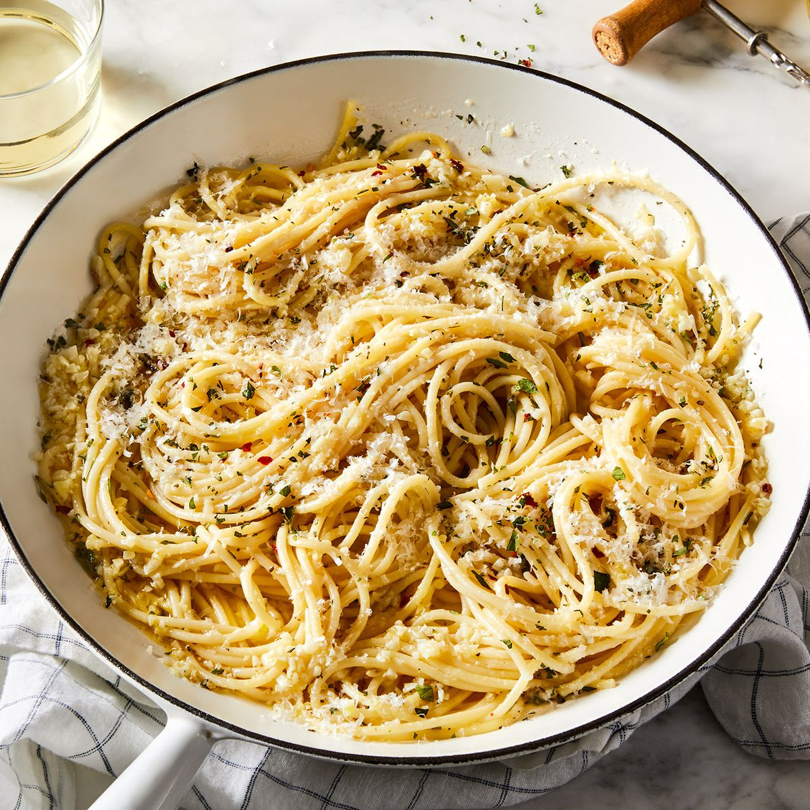

Garlic Butter Pasta

Description
Simple and flavorful pasta tossed in garlic butter and herbs—perfect for a quick, comforting meal any day of the week.
Ingredients
- 200g spaghetti
- 3 tbsp butter
- 4 cloves garlic, minced
- Salt & pepper to taste
- Fresh parsley (optional)
- Grated parmesan cheese (optional)
Steps
- Cook pasta in salted water until al dente; drain and set aside.
- In a pan, melt butter and sauté garlic for 1–2 minutes.
- Toss pasta in the garlic butter. Add salt, pepper, and parsley.
- Top with parmesan and serve hot.